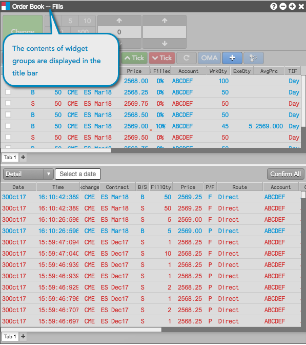
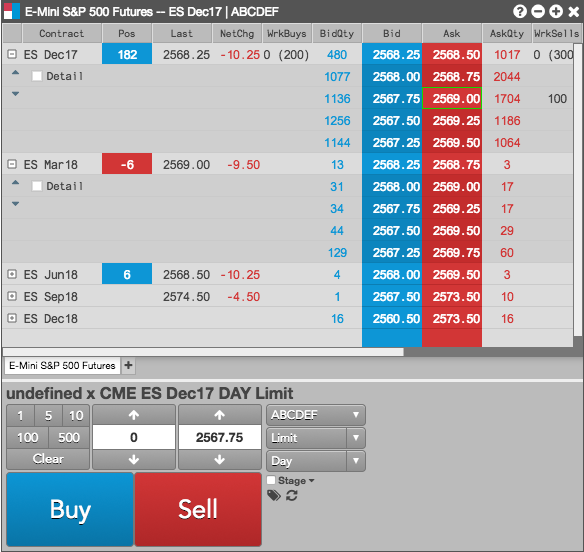
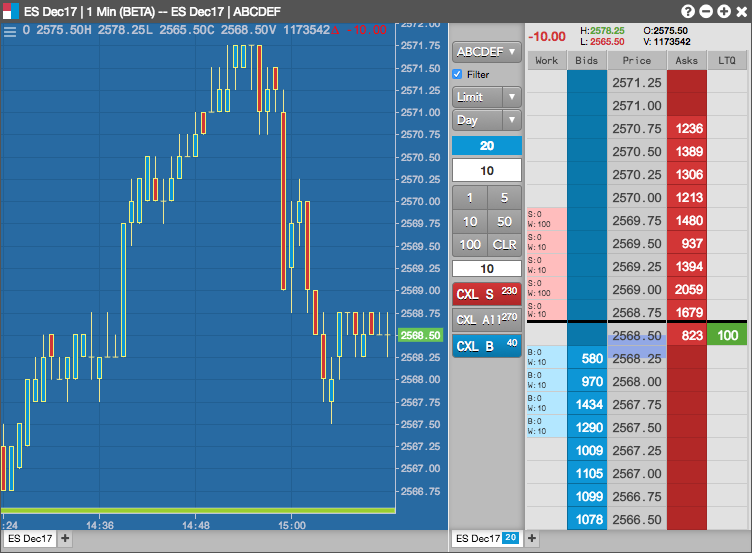
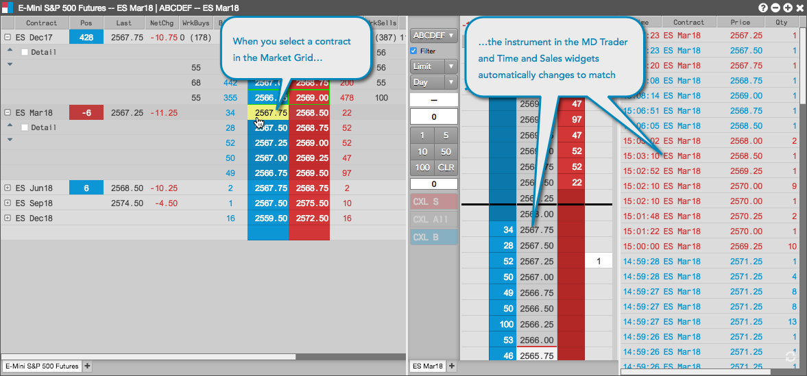

Widgets
Widget groups

You can combine two or more individual widgets to create a single widget group. The widget group displays a single titlebar and can be managed as a single entity, so you can resize, reposition, delete the group just as you would an individual widget. The following examples show some different ways you can combine widgets into a widget group to suit your trading preferences. The first example shows orders and fills in one widget. Note that the contents of each widget group are displayed in the title bar.

The next example shows a widget group used for submitting orders in the Market Grid.

The last example shows a widget group used for submitting orders based on current depth and historical data.

Each widget within the group retains its separate functionality. In Chart and MD Trader example above, you can still adjust the chart style and interval, as well as place orders in the MD Trader widget. Within a group, a logical parent widget can automatically update child widgets within that group. For example, if you create a group with a Market Grid, MD Trader, and Time and Sales, the instrument displayed in MD Trader and Time and Sales automatically synchronizes with the instrument you select in the Market Grid.

If you plan to use a widget group frequently, you can save it as a reusable custom widget so you do not have to create it every time you want to use it. Saving a widget group as a custom widget adds it to the Widgets menu for quick access and includes it search results.
Note: To provide more flexibility, the instruments are not saved with custom widgets so you can reuse them easily with different instruments.